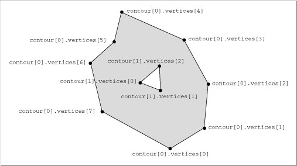

General Polygons
A general polygon is a closed plane figure defined by one or more lists of vertices. (In other words, a general polygon is a polygon defined by one or more contours.) Each contour may be concave or convex, and contours may be nested. In addition, a general polygon's contours may overlap or be disjoint. All contours, however, must be coplanar. A general polygon can have holes in it; if it does, the even-odd rule is used to determine which parts are inside the polygon.The entire general polygon can have a set of attributes, and any or all of the vertices of any contour can have a set of attributes.
The orientation of a general polygon is determined by the order of the first three noncolinear and noncoincident vertices in the first contour of the general polygon and by the current orientation style of the model containing the polygon. See the chapter "Style Objects" for more information on orientation styles.
A general polygon is defined by the
TQ3GeneralPolygonDatadata type. See "Creating and Editing General Polygons," beginning on page 4-87 for a description of the routines you can use to create and edit general polygons. Figure 4-14 shows a general polygon.
typedef struct TQ3GeneralPolygonData { unsigned long numContours; TQ3GeneralPolygonContourData *contours; TQ3GeneralPolygonShapeHint shapeHint; TQ3AttributeSet generalPolygonAttributeSet; } TQ3GeneralPolygonData;
Field Description
numContours- The number of contours in the general polygon. The value of this field must be at least 1.
contours- A pointer to an array of contours that define the general polygon.
shapeHint- A constant that specifies the shape of the general polygon. A general polygon's shape hint may be used by a renderer to optimize drawing the polygon. You can use the following constants for shape hints:
typedef enum TQ3GeneralPolygonShapeHint { kQ3GeneralPolygonShapeHintComplex, kQ3GeneralPolygonShapeHintConcave, kQ3GeneralPolygonShapeHintConvex } TQ3GeneralPolygonShapeHint;The elements of the array of contours pointed to by the
- The constant
kQ3GeneralPolygonShapeHintComplexindicates that the general polygon consists of more than one contour, is self-intersecting, or is not known to be either concave or convex. For a general polygon with exactly one contour, the constantkQ3GeneralPolygonShapeHintConcaveindicates that the polygon is concave, and the constantkQ3GeneralPolygonShapeHintConvexindicates that the polygon is convex.generalPolygonAttributeSet- A set of attributes for the general polygon. The value in this field is
NULLif no general polygon attributes are defined.contoursfield are of typeTQ3GeneralPolygonContourData, defined as follows:typedef struct TQ3GeneralPolygonContourData { unsigned long numVertices; TQ3Vertex3D *vertices; } TQ3GeneralPolygonContourData;
Field Description
numVertices- The number of vertices in the contour. The value of this field must be at least 3.
vertices- A pointer to an array of vertices that define the contour.